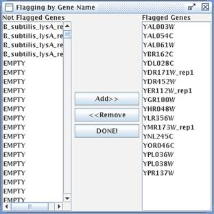

Spot Flagging (Control F)
This menu option is used if you want to exclude certain spots from consideration and have their ratios left out of the expression file.
As in the gridding window, you can zoom in and out, and fit the image to the screen. Also like the gridding window, when you hover the mouse pointer over a spot, the status bar at the bottom of the window will display information about the gene. If you see a spot that you do not want included in your calculations, click on it. A blue "X" will appear on top of the spot marking it as "flagged" to be ignored by segmentation. If you have set automatic flagging options and calculated data for the spots, orange "X"s will appear on top of the automatically flagged spots. These automatic flags can only be altered by changing the automatic flagging options in the Segmentation window.
To see what genes have been flagged, or to choose genes to be flagged or not be flagged by their gene name, choose "Flagging by Gene Name" from the Flagging menu. In the dialog that appears, the unflagged genes (the genes that will be used) are on the left, and the flagged genes appear on the right. To flag a gene, click its entry in the list on the left, then click "Add >>." To unflag a gene, click its entry in the list on the right, then click "<< Remove." You can select multiple items on the list by pressing and holding the Control key, then clicking on each item, or, to select a range of items, click the first, press and hold the Shift key, then click the last. Once you press the Add or Remove button, the changes become visible on the image behind the Flagging by Gene Name window. When you're finished flagging by gene name, click "DONE!"
From the main Flagging window, you can also choose to save or load flag files. These files have the extension ".flag" and are stored in the "flags" subfolder of the project folder. The saving process works like the grid file, but you are not automatically prompted to save a flag file. To load a flag file, open the Spot Flagging window, then choose "Load Saved Flags..." from the File menu. From that window, you can choose the flag file to load. Note that the number of grids and number of spots per grid must match the current grid to be able to load a flag file.